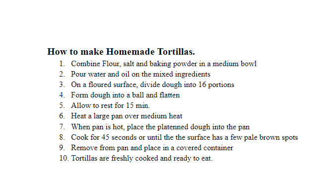
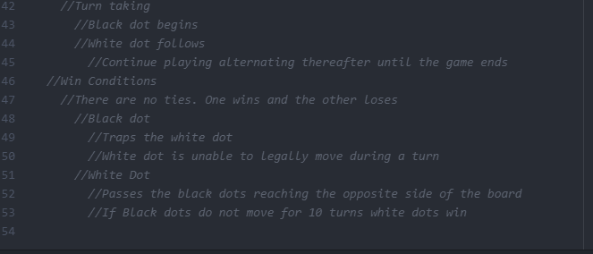
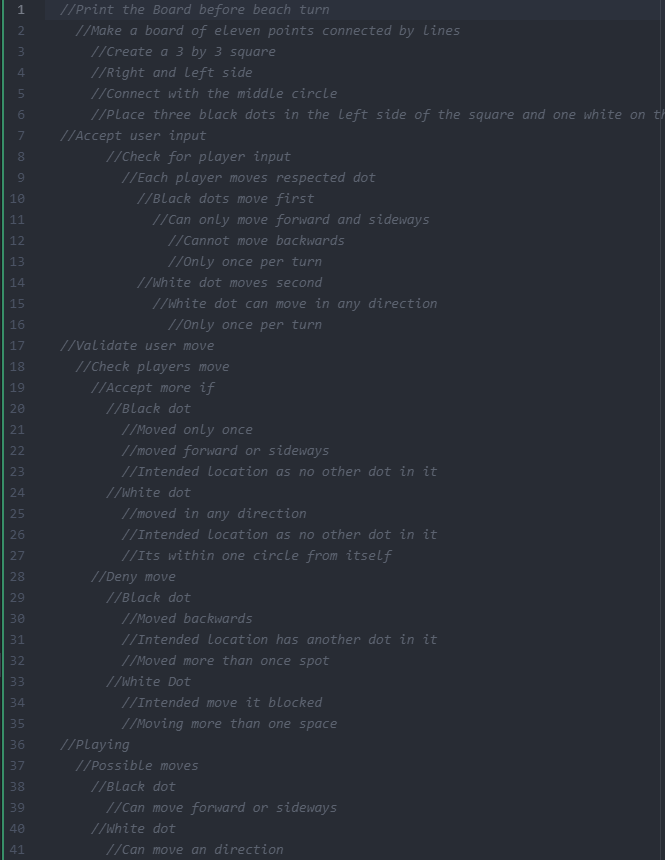
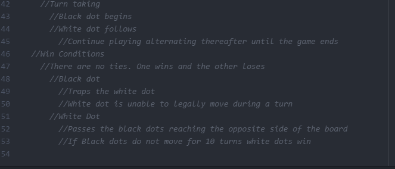
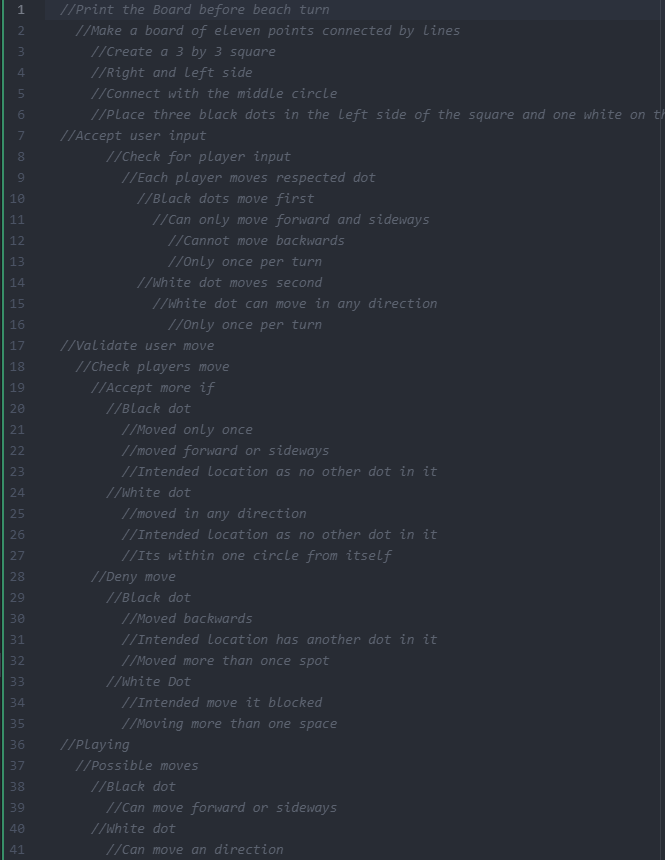

We did not have any challanges, but we did struggle to come up with an ideal game that would be fun and challanging to play but would be easy to program as we did not want to make something really fun and find out that its too complicated and hard to program for beginners like us
The only problem we discovered was resolved by using W3Schools and we had trouble during the list as we did not know how to properly list the steps in a high level without missing any important steps
this is our everyday task we decided to make into a list, how to make homemade tortillas
 



//Print the Board before beach turn //Make a board of eleven points connected by lines //Create a 3 by 3 square //Right and left side //Connect with the middle circle //Place three black dots in the left side of the square and one white on the right //Accept user input //Check for player input //Each player moves respected dot //Black dots move first //Can only move forward and sideways //Cannot move backwards //Only once per turn //White dot moves second //White dot can move in any direction //Only once per turn //Validate user move //Check players move //Accept more if //Black dot //Moved only once //moved forward or sideways //Intended location as no other dot in it //White dot //moved in any direction //Intended location as no other dot in it //Its within one circle from itself //Deny move //Black dot //Moved backwards //Intended location has another dot in it //Moved more than once spot //White Dot //Intended move it blocked //Moving more than one space //Playing //Possible moves //Black dot //Can move forward or sideways //White dot //Can move an direction //Turn taking //Black dot begins //White dot follows //Continue playing alternating thereafter until the game ends //Win Conditions //There are no ties. One wins and the other loses //Black dot //Traps the white dot //White dot is unable to legally move during a turn //White Dot //Passes the black dots reaching the opposite side of the board //If Black dots do not move for 10 turns white dots win